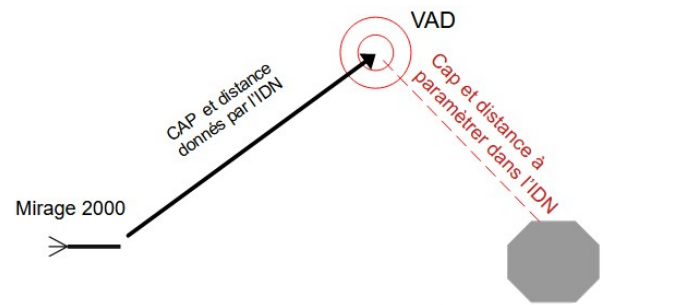

Le TACAN
Le TACAN (Tactical Air Navigation System) est un système de navigation radio utilisé dans le Mirage 2000C pour se guider vers des stations terrestres ou des aéronefs équipés du même système. Voici un guide détaillé pour son emploi dans DCS.
Présentation du TACAN
Le TACAN fournit deux informations principales :
- Direction vers la station ou l'aéronef cible.
- Distance en miles nautiques (NM) entre votre appareil et le TACAN.
Interface TACAN
Le système TACAN est géré depuis deux emplacements dans le cockpit :
- Panel TACAN : Situé sur la console gauche.
- Affichage sur le HUD et l'écran ALPHA du PCN.
Éléments du panneau TACAN :
- OFF : Désactive le TACAN.
- REC : Permet de recevoir uniquement la direction.
- TR : Active la réception de la direction et de la distance (mode standard).
- AA TR : Mode Air-Air pour suivre un autre aéronef équipé TACAN.
- Sélecteur de canal : Permet de sélectionner une fréquence (1 à 126) avec les commutateurs rotatifs.
- X/Y : Sélecteur pour le sous-canal (X ou Y).
Configuration du TACAN
Étapes pour configurer et utiliser le TACAN :
- Tourner le sélecteur de mode sur TR pour une utilisation classique (ou AA TR pour le mode Air-Air).
- Utiliser les commutateurs rotatifs pour entrer le numéro du canal TACAN.
- Ajuster le sélecteur sur X ou Y selon la fréquence de la station cible. (Les fréquences TACAN sont généralement fournies dans le briefing de mission ou accessibles via la carte F10).
- Une fois configuré, la direction apparaîtra sur le VTH, et la distance sera affichée sur l’écran ALPHA du PCN.
Utilisation du TACAN en vol
Navigation vers une station TACAN terrestre :
- Configurez le TACAN pour le canal de la station terrestre.
- Mettez votre IDN sur le mode TCN.
- Une flèche sur la boussole indique la direction de la station.
- Suivez cette flèche pour vous orienter vers la station.
Ravitaillement Air-Air avec le TACAN
- Configurez le canal TACAN de l’aéronef ravitailleur (indiqué dans le briefing de mission).
- Sélectionnez le mode AA TR.
- Une flèche sur le HUD indique la direction du ravitailleur.
- La distance s’affiche sur le PCN pour vous aider à vous rapprocher.
Modes Spéciaux
Mode REC (Reception Only) :
- Utile si vous ne voulez recevoir que la direction de la station sans calcul de distance.
Mode AA TR (Air-Air):
- Sert à localiser un autre aéronef équipé TACAN, souvent utilisé pour suivre un leader ou un ravitailleur.
Mode VAD (Vecteur Additionnel dans l'IDN):
Permet de se diriger vers un point en utilisant le TACAN comme intermédiaire voir schéma ci-dessous
Il suffit d'entrer dans le menu θ dans l'IDN, le relèvement magnétique par rapport au nord de la route entre le TACAN et le VAD puis il faut rentrer dans le menu ρ la distance entre le TACAN et le VAD.